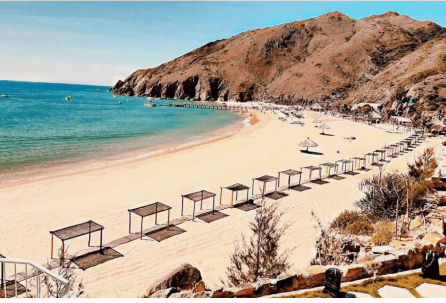

Biển Kỳ Co

Bãi Kỳ Co nằm trên địa phận xã Nhơn Lý, thành phố Quy Nhơn, tỉnh Bình Định, cách trung tâm thành phố Quy Nhơn khoảng 25km. Với 3 mặt tựa vào núi, 1 mặt hướng ra biển, địa danh này khoác lên mình vẻ đẹp thơ mộng và quyến rũ. Đến đây, ai cũng cảm thấy ngỡ ngàng trước không khí trong lành mang theo vị mặn mòi của biển cả, nước xanh màu ngọc bích, cát vàng óng ánh và những khối đá nhấp nhô nằm rải rác. Một số trải nghiệm thú vị không nên bỏ lỡ tại danh lam thắng cảnh Bình Định này bao gồm: khám phá hang động khi thuỷ triều xuống; cắm trại qua đêm; chiêm ngưỡng khung cảnh lúc bình minh, hoàng hôn; lặn biển ngắm san hô…
Eo Gió
Eo Gió tọa lạc trên bán đảo Phương Mai, Nhơn Lý, Quy Nhơn. Đây là một eo biển khá nhỏ, được bao bọc bởi các rặng núi đá cao uốn lượn. Dưới chân các dãy núi là bãi đá Đẻ có lối đi gập ghềnh do bị nước biển bào mòn. Dưới sự tác động của thiên nhiên, Eo Gió sở hữu 19 hang yến. Người dân địa phương đã đặt cho chúng những cái tên độc đáo như hang Ba Nghé, hang Sức Khỏe, hang Kỳ Co, hang Dơi… Đến đây vào lúc sáng sớm hoặc chiều muộn, bạn hãy đứng từ trên cao, phóng tầm mắt ra xa để hít hà vị mặn mòi của gió biển hay nằm ngả lưng trên những phiến đá to, cảm nhận vẻ đẹp của đất trời.
Tháp Bánh Ít
Tháp Bánh Ít còn có tên gọi khác là tháp Bạc. Nằm trên đỉnh một quả đồi giữa 2 nhánh của sông Kôn, công trình này được xây dựng vào cuối thế kỉ XI – đầu thế kỷ XII, bao gồm 4 tháp: tháp Chính, tháp Hỏa, tháp Bia và tháp Cổng. Từ xa nhìn lại, tháp tựa như chiếc bánh ít – đặc sản Bình Định nổi tiếng khắp gần xa. Với giá trị văn hoá, tâm linh độc đáo, tháp Bánh Ít đã được công nhận là di tích kiến trúc nghệ thuật vào năm 1982. Bên cạnh đó, năm 2014, công trình này còn nằm trong danh sách 10 tháp, cụm tháp cổ được nhiều du khách tham quan nhất do tổ chức kỷ lục Việt Nam công nhận.
Tìm Hiểu thêm
Nếu các bạn muốn tìm hiểu thêm về các danh lam thắng cảnh của Bình Định thì các bạn có thể click: click here
Tài Liệu Tham Khảo